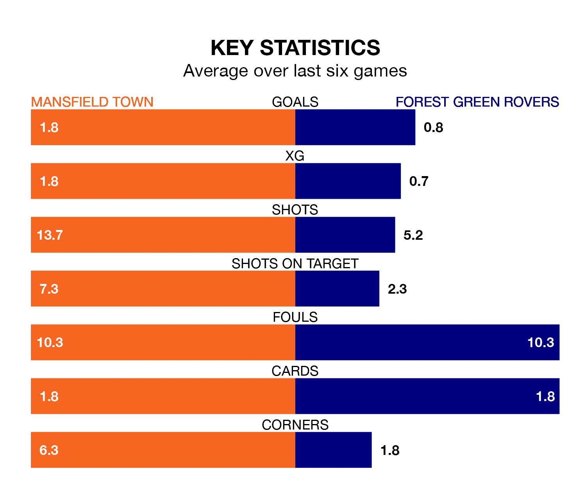

Struggling Mansfield Town face Forest Green Rovers at the One Call Stadium on Tuesday looking to build on a win in their last league outing.
After securing all three points with a 1-4 victory over Crawley Town on Saturday, the Stags sit fourth in EFL League Two.
They travel to play a Forest Green side 24th in the standings, who lost in their last match, 2-0 against Milton Keynes Dons.
With 80 goals in 41 games so far this season, Mansfield are the league's third-highest scorers with 2.0 goals per game. And they are conceding fewer than average, letting in 43 goals at a rate of 1.0 per game.
Forest Green, meanwhile, are below average scorers, with 1.0 goal per game, compared to a league average of 1.5. They have conceded 1.7 goals per game.
In the last 10 years, Mansfield and Forest Green have played each other on 11 occasions. Mansfield won four of them, Forest Green three, and they drew four times.
On average, the Stags scored 1.5 goals and the Green 1.2 in those matches.
Their last meeting was on February 10, when Mansfield won 4-0 away.
In Davis Keillor-Dunn, Town have one of the league's most on-form strikers so far this season. He has notched 19 goals in 41 appearances, to sit fourth in the scoring charts.
His goal rate of one every 164 minutes is slightly quicker than that of Mathew Stevens, Rovers' top scorer with a goal every 180 minutes, and a total of nine goals in 27 games.
The Stags are in mixed form in EFL League Two, with two wins and a draw from their last six games.
With two wins and four losses over that period, the Green's form is slightly worse – they have taken six points from 18, compared to the hosts' seven.
Tuesday's match will be refereed by Daniel Middleton, who has taken charge of 11 EFL League Two games so far this season, issuing one red card and booking 41 players. He has awarded two penalties.
The last Mansfield game Middleton refereed was a 2-0 away win against Stockport County on January 1. His last Forest Green match was their 2-0 loss at home against Salford City on August 5.
Updated: 11:20 (UTC), 09/04/24